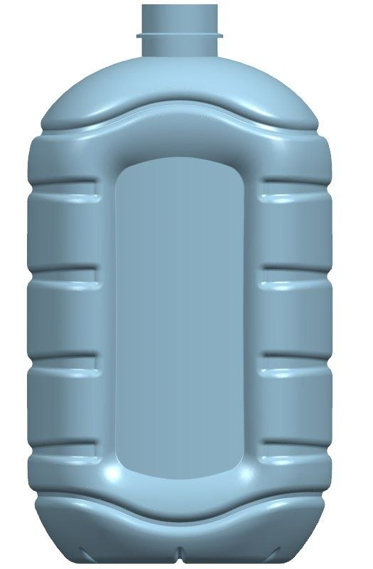

Fan · Intellektual mulk
Butilka shakli faqat funksional vazifasidan kelib chiqqan bo‘lsa ham tovar belgisi sifatida ro‘yxatdan o‘tkazilishi mumkinmi?
Shakli funksional zaruratdan kelib chiqadigan uch o‘lchamli butilka tovar belgisi sifatida huquqiy himoya olishi mumkinmi? O‘zbekiston qonunchiligi va ma'muriy reglament bu savolga aniq javob beradi.

O‘zbekiston Respublikasining «Tovar belgilari, xizmat ko‘rsatish belgilari va tovar kelib chiqqan joy nomlari to‘g‘risida»gi Qonuniga ko‘ra, tovar belgisi bir yuridik yoki jismoniy shaxsning tovarlarini boshqa shaxslarning shu turdagi tovarlaridan farqlash uchun xizmat qiladigan va belgilangan tartibda ro‘yxatdan o‘tkazilgan belgidir.
Shuningdek, Vazirlar Mahkamasining 2023-yil 19-sentyabrdagi 480-son qarori bilan tasdiqlangan Tovar belgilari va xizmat ko‘rsatish belgilarini ro‘yxatdan o‘tkazish bo‘yicha davlat xizmatini ko‘rsatishning ma'muriy reglamentida tovar belgisi sifatida ro‘yxatdan o‘tkazilishi mumkin bo‘lmagan belgilar ham belgilangan.
Xususan, mazkur Reglamentning 7-bandi «d» kichik bandiga muvofiq, shakli faqat funksional vazifasidan kelib chiqadigan uch o‘lchamli obyektlar tovar belgisi sifatida ro‘yxatdan o‘tkazilmaydi.
Tahririyatga kelib tushgan murojaatda tadbirkorlardan biri maishiy kimyo mahsulotlari uchun foydalanilayotgan butilka shaklini tovar belgisi sifatida ro‘yxatdan o‘tkazish mumkin yoki mumkin emasligi yuzasidan aniqlik kiritishni so‘radi.
Ma'lum bo‘lishicha, talabnoma bo‘yicha o‘tkazilgan ekspertiza jarayonida mazkur belgi uch o‘lchamli obyekt sifatida baholangan hamda uning shakli asosan mahsulotning funksional vazifasidan kelib chiqishi mumkinligi haqida e'tirozlar bildirilgan.
Funksional shakl deganda nima tushuniladi?
Shakli faqat funksional vazifasidan kelib chiqadigan uch o‘lchamli obyektlar deganda mahsulotning tashqi ko‘rinishi uning texnik yoki amaliy vazifasini bajarishi uchun zarur bo‘lgan shakl bilan belgilanadigan obyektlar tushuniladi.
Masalan, oddiy butilka, quti yoki boshqa idishlarning shakli mahsulotni saqlash, tashish yoki undan foydalanish qulayligini ta'minlashga xizmat qilsa, bunday shakl funksional deb baholanishi mumkin.
Biroq mahsulot shaklida iste'molchi tomonidan oson ajratib olinadigan, boshqa tovarlardan farqlovchi o‘ziga xos dizayn elementlari mavjud bo‘lsa, u har doim ham faqat funksional shakl sifatida baholanmaydi.
Qonunchilik qanday istisnoni nazarda tutadi?
Ma'muriy reglamentning 9-bandiga ko‘ra, 7-bandda ko‘rsatilgan ayrim belgilarni ro‘yxatdan o‘tkazishga, agar ular foydalanish natijasida farqlanish xususiyatiga ega bo‘lganligi isbotlansa, yo‘l qo‘yiladi.
Dastlab ro‘yxatdan o‘tkazilishi mumkin bo‘lmagan shakl ham uzoq muddatli foydalanish natijasida tanilgan bo‘lsa, tovar belgisi sifatida huquqiy muhofaza olishi mumkin.
Ya'ni dastlab ro‘yxatdan o‘tkazilishi mumkin bo‘lmagan shakl ham uzoq muddatli foydalanish natijasida iste'molchilar ongida muayyan ishlab chiqaruvchi bilan bog‘lanadigan darajada tanilgan bo‘lsa, u tovar belgisi sifatida huquqiy muhofaza olishi mumkin.
Farqlanish xususiyati qanday isbotlanadi?
Qonunchilikka ko‘ra, talabnoma topshirilgan sanaga qadar belgi foydalanish natijasida farqlanish xususiyatiga ega bo‘lganligini tasdiqlovchi quyidagi ma'lumotlar taqdim etilishi mumkin:
- mazkur belgi bilan belgilangan tovarlarni ishlab chiqarish va sotish hajmi;
- tovarlarning sotilish hududlari;
- belgidan foydalanish muddati;
- reklama uchun sarflangan xarajatlar hajmi;
- iste'molchilarning xabardorlik darajasi, shu jumladan ijtimoiy so‘rovlar natijalari;
- ommaviy axborot vositalari va boshqa ochiq manbalarda e'lon qilingan materiallar;
- O‘zbekiston yoki xorijdagi ko‘rgazmalarda mahsulot namoyish etilganligi haqidagi ma'lumotlar;
- farqlanish xususiyatini tasdiqlovchi boshqa dalillar.
Xulosa
Demak, butilka shakli mahsulotning funksional vazifasidan kelib chiqadigan uch o‘lchamli obyekt sifatida baholansa ham, bu uni mutlaqo ro‘yxatdan o‘tkazish mumkin emasligini anglatmaydi.
Agar talabnoma beruvchi talabnoma topshirilgan sanaga qadar ushbu shakldan amalda foydalanganligini, mazkur shakl bilan belgilangan mahsulotlar ishlab chiqarilib sotilganligini, reklama qilinganligini hamda iste'molchilar orasida tanilganligini tegishli hujjatlar va dalillar bilan isbotlay olsa, bunday uch o‘lchamli belgi foydalanish natijasida farqlanish xususiyatini orttirgan deb e'tirof etilishi mumkin.
Shu sababli, qonunchilikda nazarda tutilgan dalillar mavjud bo‘lgan taqdirda, mahsulot butilkasi shakli ham tovar belgisi sifatida davlat ro‘yxatidan o‘tkazilishi va huquqiy muhofaza bilan ta'minlanishi mumkin.